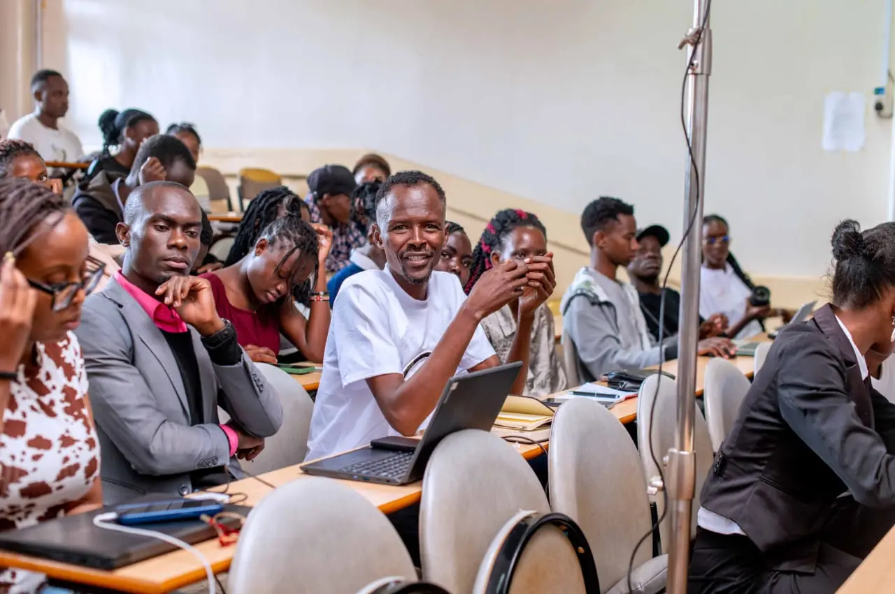
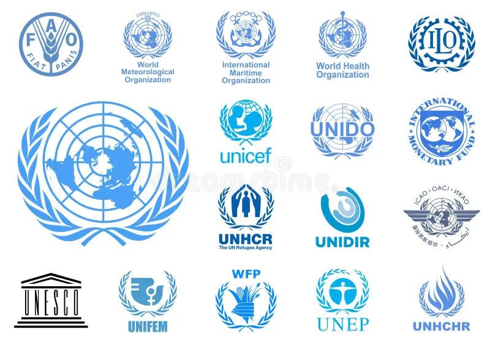

Stakeholders of our Association

Students are the main stakeholders, APSOMU is primarily focused on promoting and advancing study of political science among students.

Association provides opportunities for students to engage with different scholars and practitioners therefore this individuas are stakeholders of the organization.
Association works to promote research and scholarships in the field of political science and to influence policy and contribute to the development of political science as a discipline. Therefore higher institutions are stakeholders.
Association may work to influence policy and contribute to the development of effective and responsive governance and therefore government and Administrative bodies are stakeholders in the organization.

Association may Foster collaboration and partnerships with other organizations and institutions in the political science community to advance the field and promote it's mission therefore this organization are stakeholders.
Students
Students are the main stakeholders, APSOMU is primarily focused on promoting and advancing study of political science among students.